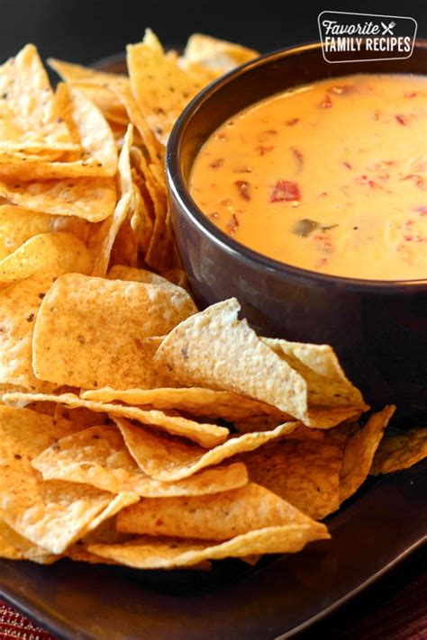

Ragu alla Bolognese

Ingredients
- 25 g Flour
- 30 g Butter
- 150 g Cheddar Cheese
- 100 g Cheese of choice
- 300 ml Milk
- 1/2 tbsp Salt
- 1/2 tbsp Sweet Red Pepper
- 1 teaspoon Chilli Powder
- 1 teaspoon Shallot
- 1/2 cup Jalapeño
Steps (mix at all times)
- In a pan, melt the butter
- When water evaporates, add Flour
- When the smell of raw flour dissipates, slowly add milk
- mix rigorously while adding milk
- Upon densification, start adding the cheese
- Add Jalapeños
- Season and serve